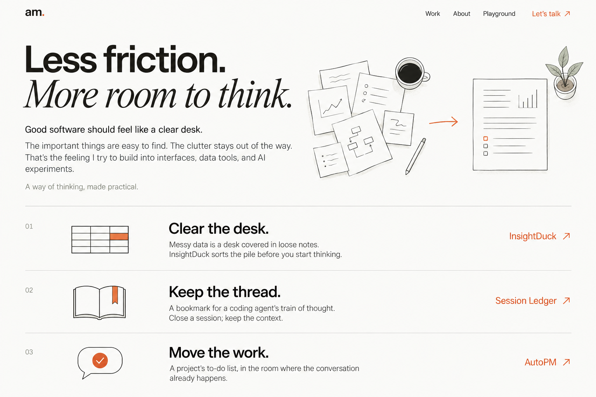
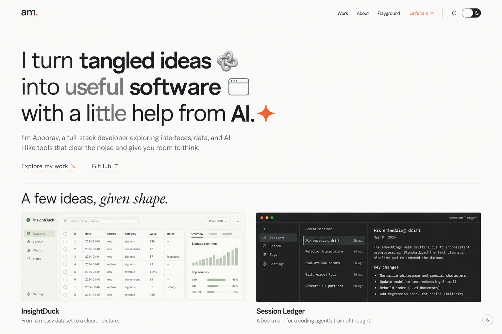
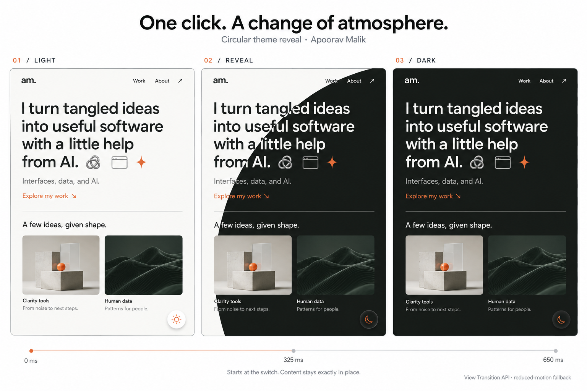
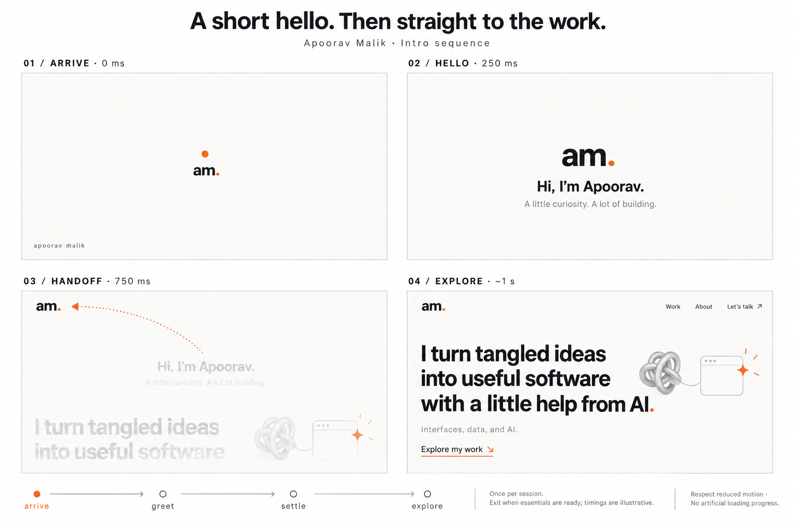

03 / CONTENT
Open full image ↗Make the idea easy to understand.


Original metaphors connect your projects to familiar experiences, followed by a concrete explanation of what each tool does.
Four concept canvases for Apoorav Malik’s next portfolio revision. Open an image to inspect it at full resolution.

Build the headline as real text with small SVG symbols. The knot stands for tangled ideas, the window for useful software, and the spark for AI.
Project interface artwork is illustrative. Use verified screenshots or actual terminal workflows in the production build.

A circular View Transition starts at the switch and reveals the new palette over roughly 650 milliseconds. Position and content remain stable.
This canvas specifies motion. Its abstract project thumbnails and captions are mood placeholders. Reduced-motion mode uses an immediate theme change.

Original metaphors connect your projects to familiar experiences, followed by a concrete explanation of what each tool does.

A brief greeting shown once per session. The mark settles into the header as the portfolio is revealed. Asset readiness controls completion; the timings are illustrative.